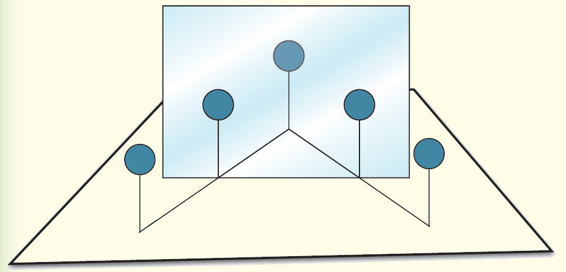
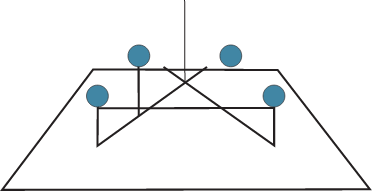

along your line of sight, as shown in Figure 4.14.

Line of sightMirror1234
Figure 4.14
6. Remove the mirror and use a ruler to draw a line through the positions of pins 1 and 2.This represents the incident ray.
7. Draw a line through the positions of pins 3 and 4.This represents the reflected ray.
8. Extend the lines until they intersect.The point of intersection is where the image appears, as shown in Figure 15.

Location of image
Figure 4.15
9. Measure the shortest distance from pin 1 to the mirror line.Also, measure the shortest distance from the location of the image to the mirror line.
10. Draw a line through the midpoint of the mirror line and the point representing the location of the image.This line will be perpendicular to the mirror line and therefore the normal.
11. Using a protractor, measure the angle of incidence and the angle of reflection.
Questions
(a) Compare the object’s size with the size of the image formed in Step 3.
(b) Discuss your results in step 9.
(c) Compare the two angles formed by the rays and discuss your results.
(d) Comment on the position of the incident ray, the reflected ray and the normal.
The image of the pin in the mirror is identical in size and shape to the actual pin.This shows that both the object and its image have the same size.Also, the distances of the object and its image from the mirror are equal.The activity also demonstrates that the angle at which light hits the mirror (angle of incidence) equals the angle at which it reflects (angle of reflection).Furthermore, the incident ray, reflected ray, and the normal line all lie within the same plane.
Image formed by plane mirrors
When we look in a mirror, we do not see the actual object but rather an image created by light rays reflecting off the mirror’s surface.These reflected rays adhere to the laws of reflection.Although the image forms in our eyes, it appears to be located behind the mirror, despite